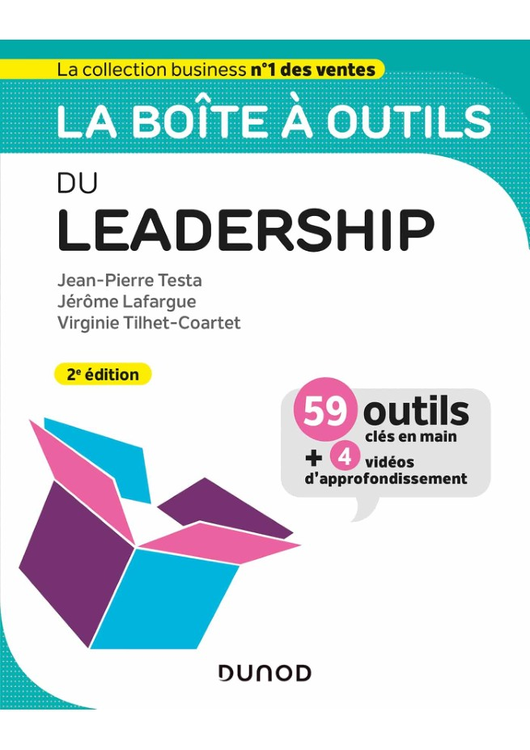

Management et entrepreneuriat ↗
La Boîte à outils du leadership





Carte d’identité
- Auteur
- Jean-Pierre Testa, Jérôme Lafargue et Virginie Tilhet-Coartet
- Genre
- Savoirs
- Sous-genre
- Management et entrepreneuriat
- Éditeur
- Dunod
- Parution de l’édition
- 10 mars 2021
- ISBN numérique
- 9782100826575
- Autres ISBN
- 9782100824533 (papier)
- Langue de l’édition
- Français
- Collection
- La Boîte à outils
- Fichier du site
- PDF · 440 pages
Deuxième édition, 59 outils et méthodes. Tirage / présentation de 2021, paru le 10 mars 2021 ; le copyright intérieur mentionne 2017. ISBN papier 2021 : 9782100824533.
 Résumé du livreL’essentiel en quelques lignes
Résumé du livreL’essentiel en quelques lignes
Huit dossiers aident à travailler des situations de leadership. Ils partent de la légitimité personnelle, puis abordent la manière de formuler une vision, de la partager, de fédérer une équipe et d’accompagner le changement. Chaque dossier propose des outils à choisir selon le problème rencontré.
 Dossiers8 entrées
Dossiers8 entrées
-
01 Construire sa légitimitéPDF p. 16
Les premiers outils invitent à identifier ses forces, à mieux lire ses émotions et à prendre sa place. Le dossier traite aussi de confiance, de temps et d’assertivité.
Lire à cette page ↗ -
02 Formuler une visionPDF p. 127
Le dossier transforme une idée de départ en objectif formulé et partageable. Il présente plusieurs outils pour préciser le résultat voulu et la façon de le décrire.
Lire à cette page ↗ -
03 Partager ce que l’on veut construirePDF p. 165
Les auteurs travaillent la prise de parole, la structure du message et la présence. Les outils aident à rendre une idée compréhensible pour des interlocuteurs différents.
Lire à cette page ↗ -
04 Créer l’adhésionPDF p. 209
Cette partie aborde l’influence, les préférences de communication et la négociation. Elle invite à prendre en compte les intérêts et les attentes des personnes concernées.
Lire à cette page ↗ -
05 Fédérer une équipePDF p. 255
Les outils donnent des repères pour reconnaître les étapes de vie d’une équipe. Ils proposent d’adapter le pilotage au climat relationnel et au degré de maturité du groupe.
Lire à cette page ↗ -
06 Accompagner le changementPDF p. 285
Ce dossier s’intéresse aux réactions face à une transformation. Il propose d’observer où se trouvent les freins et d’ajuster son accompagnement au fil du changement.
Lire à cette page ↗ -
07 Donner une marge de décisionPDF p. 316
Les auteurs travaillent la délégation et le développement de l’autonomie. Le responsable doit préciser le cadre et la latitude laissée à la personne qui agit.
Lire à cette page ↗ -
08 Valoriser le travailPDF p. 372
Le dernier dossier s’attache aux retours, à la reconnaissance et à l’encouragement. Il donne des façons de nommer des progrès concrets et de soutenir l’engagement.
Lire à cette page ↗
Les fils du livre


Mon carnet de lecture
Mes étoiles
0 critique
Ma critique sur ce livre ↗